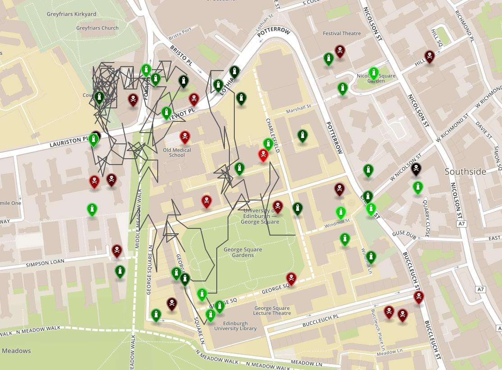
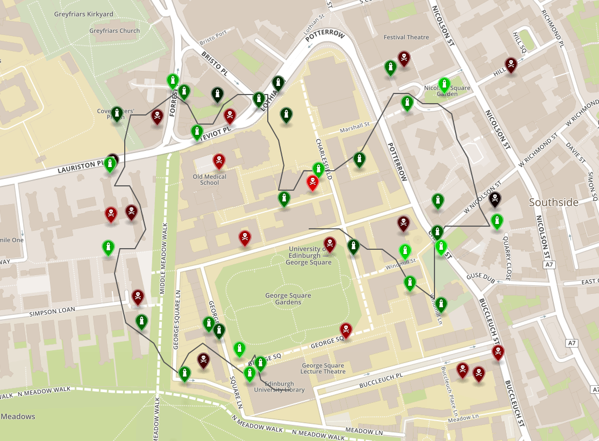

Informatics Large Practical
Report
Student: s1713772
Autumn 2019
Software architecture description
The application uses classes to represent objects in the PowerGrab game. Hence, we have the classes Station and Drone. Drone is an abstract class, which only implements the basic functionality of moving in a given direction and connecting to stations. It also holds a random number generator object for use by child classes. The responsibility for choosing the direction to move is delegated to child classes via the getDirection() method.
The Drone class is extended by two other classes, one for each drone type. It only implements the basic functionality of a drone, such as movement and resource transfer. The decision of where to move next is left to child classes through the abstract method getDirection(). StatelessDrone has no other fields and just implements getDirection(). StatefulDrone is more complicated and has its own fields. HeuristicSearchSolver and IterativeTspSolver are used by StatefulDrone to calculate the optimal path. Related are the interfaces Solver and TspSolver. TreePriorityDeque is used by HeuristicSearchSolver. It's a double-ended priority queue to allow removing the worst elements when the queue grows too large. StatefulDrone is discussed in more detail in Stateful drone strategy.
To make it easier for a drone to query the stations in the play area, the GameMap class stores a list of stations and provides methods for finding the nearest. The map is loaded from a GeoJSON file using the GeoJson class which can load the map from a website or the local filesystem for testing.
The GameRules class stores various values related to the rules of the PowerGrab game, like the distance travelled by the drone in one move. Position, Direction and Rectangle represent basic geographic data types used to simulate the game.
The simulation is carried out by the Simulation class which repeatedly calls the given drone's getDirection() and move() methods. It records the drone's moves in its own Move objects and returns a list of them. Finally, Program is the entry point of the application which parses the command line arguments, instantiates the chosen drone, prepares the simulation, and after it ends, writes the log files.
Class documentation
Package org.paulgeorgiou.collections
Class TreePriorityDeque<E>
extends java.util.AbstractQueue<E>
implements java.util.Deque<E>, java.io.Serializable, java.lang.Cloneable
A priority double-ended queue based on a TreeSet.
Fields
- private java.util.Comparator<? super E> comparator
- Comparator for comparing the elements in this queue
- private long index
- The index to be used for the next entry
- private int maxSize
- The maximum size of this queue
- private java.util.TreeSet<TreePriorityDeque.Entry> tree
- The TreeSet backend of this queue
Constructors
- TreePriorityDeque()
- Creates a TreePriorityDeque that orders its elements according to their natural ordering.
- TreePriorityDeque(java.util.Collection<? extends E> c)
- Creates a TreePriorityDeque containing the elements in the specified collection.
- TreePriorityDeque(java.util.Collection<? extends E> c, java.util.Comparator<? super E> comparator)
- Creates a TreePriorityDeque that orders its elements according to the specified comparator, containing the elements in the specified collection.
- TreePriorityDeque(java.util.Comparator<? super E> comparator)
- Creates a TreePriorityDeque that orders its elements according to the specified comparator.
Methods
- private long getIndex()
- Returns the current index and increments it for use by the next call.
- int getMaxSize()
- Returns the maximum size of this queue.
- void setMaxSize(int maxSize)
- Set the maximum size of this priority queue.
- private void trim()
- Remove the greatest elements of the priority queue such that its size is no greater than the maximum size specified.
- void trim(int maxSize)
- Remove the greatest elements of the priority queue such that its size is no greater than the maximum size specified.
Additionally, this class has the methods of the implemented interfaces (Deque, Queue, Cloneable).
Package uk.ac.ed.inf.powergrab.search
Interface HeuristicSearchSolver.Node<T>
extends java.lang.Comparable<T>
The interface all nodes have to implement for providing child nodes and goal checking. Nodes also have to be Comparable, with least nodes considered the best.
Methods
- java.lang.Iterable<? extends T> childNodes()
- Returns the nodes that can be visited from this node.
- default boolean equivalent(T o)
- Returns true if this node is equivalent to the parameter o.
- boolean isGoal()
- Returns true if this node is a goal.
Additionally this interface has the methods of the extended interfaces (Comparable).
Interface Solver<P,S>
Interface for a problem solver — provides a solution of type S to a problem of type P.
Methods
- S solve(P problem)
- Returns a solution to the problem.
Interface TspSolver<N>
extends Solver<java.util.Collection<? extends N>, java.util.List<N>>
Interface for a Travelling Salesman Problem solver
Methods
- N getInitialNode()
- Returns the initial node if it has been set, null otherwise.
- void setInitialNode(N initialNode)
- Sets the fixed initial node.
- java.util.List<N> solve(java.util.Collection<? extends N> nodes)
- Finds the shortest tour of the given nodes.
Interface TspSolver.Node<T>
An interface that nodes in a TSP may be required to implement to provide the distance/cost between nodes.
Methods
Class HeuristicSearchSolver<N>
implements Solver<N,N>
Implements a best-first search algorithm. Nodes have the responsibility of providing child nodes, cost calculation, and goal checking.
Fields
- private int maxExploredSize
- The maximum size of the frontier set
- private int maxFrontierSize
- The maximum size of the explored set
Constructors
- HeuristicSearchSolver()
- Creates a HeuristicSearchSolver instance with unbounded frontier and explored sets.
- HeuristicSearchSolver(int maxQueueSizes)
- Creates a HeuristicSearchSolver instance with frontier and explored sets being bounded to maxQueueSizes elements.
Methods
- int getMaxExploredSize()
- Returns the maximum size of the frontier set.
- int getMaxFrontierSize()
- Returns the maximum size of the explored set.
- void setMaxExploredSize(int maxExploredSize)
- Sets the maximum size of the explored set.
- void setMaxFrontierSize(int maxFrontierSize)
- Sets the maximum size of the frontier set.
- N solve(N first)
- Runs a heuristic search. Returns the solution or null if not found.
Class IterativeTspSolver<N>
implements TspSolver<N>
A Travelling Salesman Problem solver which finds a solution using the Nearest Neighbours and 3-opt heuristics.
Fields
- private N initialNode
- The fixed initial node
- private int maxIterations
- The maximum number of iterations
- private boolean symmetric
- Whether the TSP is symmetric, i.e. the distance/cost from A to B is the same as from B top A.
Constructors
- IterativeTspSolver()
- Creates an IterativeTspSolver instance without a limit on iterations.
- IterativeTspSolver(int maxIterations)
- Creates an IterativeTspSolver instance with a limit on iterations.
Methods
- private void addKeyNodes(java.util.ArrayList<N> keyNodes, java.util.ArrayList<N> nodes, int i, int j, int k)
- Extracts the key nodes that will affect the total distance of the tour based on i, j, k.
- java.util.List<N> applyHeuristics(java.util.Collection<? extends N> nodes)
- Returns a solution found by iteratively applying the 3-opt heuristic.
- N getInitialNode()
- Returns the initial node if it has been set, null otherwise.
- int getMaxIterations()
- Returns the maximum number of iterations.
- boolean getSymmetric()
- Returns whether the TSP is symmetric, true by default.
- private double keyNodesDistance(java.util.ArrayList<N> keyNodes)
- Returns the distance between the key nodes that will affect the total distance.
- private void rearrange(java.util.ArrayList<N> nodes, int i, int j, int k, boolean swap, boolean revA, boolean revB)
- Partitions the tour according to i, j, k and reconnects it according to swap, revA, revB.
- void setInitialNode(N initialNode)
- Sets the fixed initial node.
- void setMaxIterations(int maxIterations)
- Sets the maximum number of iterations.
- void setSymmetric(boolean symmetric)
- Sets whether the TSP is symmetric, true by default.
- java.util.List<N> solve(java.util.Collection<? extends N> nodes)
- First constructs a solution using the Nearest Neighbours heuristic and then iteratively applies the 3-opt heuristic.
- java.util.List<N> solveNearestNeighbours(java.util.Collection<? extends N> nodes)
- Returns a solution found using the Nearest Neighbours heuristic.
- private boolean threeOpt(java.util.ArrayList<N> nodes)
- Applies the 3-opt heuristic once.
- private double totalDistance(java.util.ArrayList<N> nodes)
- Returns the total distance of the given tour.
Package uk.ac.ed.inf.powergrab
Class Drone
Base class for a drone which implements movement and resource transfer.
Fields
- private double coins
- Amount of coins held by this drone
- GameMap map
- Map of the play area
- private Position position
- Position of this drone
- private double power
- Amount of power held by this drone
- java.util.Random random
- This drone's random number generator
Constructors
- Drone(Position position, GameMap map, double coins, double power)
- Creates a drone.
Methods
- void addCoins(double coins)
- Adds coins to the resources held by this drone.
- void addPower(double power)
- Adds power to the resources held by this drone.
- double getCoins()
- Returns the amount of coins held by this drone.
- abstract Direction getDirection()
- Returns the direction this drone chose to move next.
- Position getPosition()
- Returns this drone's position.
- double getPower()
- Returns the amount of power held by this drone.
- void move(Direction direction)
- Move in the specified direction and update coins and power.
Class GameMap
A map of the play area, contains stations.
Fields
- java.util.List<Station> stations
- List of Stations in the play area.
Constructors
- GameMap()
- Creates an empty map.
- GameMap(GameMap map)
- Creates a map and copies the stations from the given map.
Methods
- Station closeStation(Position position)
- Returns the Station in this map whose position is closest to the given position, and is close enough for resource transfer to occur, as defined in GameRules.
- Station nearestStation(Position position)
- Returns the Station in this map whose position is closest to the given position, or null if the map is empty.
Class GameRules
Class containing static fields about the game's rules
Fields
- static double closeDistance
- A drone within this distance to a station can connect with it.
- static double moveDistance
- How far a drone moves in step
- static Rectangle playArea
- The area a drone can move within
- static double powerConsumedPerMove
- Amount of power consumed by a drone in each move
Class GeoJson
Stores the contents of a GeoJSON file.
Fields
- private JSONObject featureCollection
- Represents the GeoJSON file's root object.
Constructors
- GeoJson(GeoJson geoJson)
- Creates a GeoJson object from from another.
- GeoJson(JSONObject json)
- Creates a GeoJson object from a map encoded in a JSONObject.
- GeoJson(Path file)
- Creates a GeoJson object from the map loaded from file.
- GeoJson(String json)
- Creates a GeoJson object from a map encoded in a json String.
- GeoJson(URL url)
- Creates a GeoJson object from the map downloaded from url.
Methods
- void addMoves(java.util.List<Simulation.Move> moves)
- Adds a trace of a drone's moves.
- GameMap getMap()
- Returns a GameMap containing the stations in the GeoJSON file.
- java.lang.String toString()
- Encodes this GeoJSON as a String.
Class Program
implements java.lang.Runnable
The entry point of the program which launches the simulation.
Fields
- private static java.time.format.DateTimeFormatter DATE_FORMAT
- Formats dates in the dd-MM-yyyy format.
- private java.lang.String droneType
- "stateless" or "stateful"
- private java.time.LocalDate firstDate
- The first date to run a simulation on
- private static double INIT_COINS
- The initial amount of coins the drone will have
- private static double INIT_POWER
- The initial amount of power the drone will have
- private Position initialPosition
- The initial position the drone will have
- private java.time.LocalDate lastDate
- The last date to run a simulation on
- private java.nio.file.Path localDirectory
- If maps should be loaded from local storage this will be the root directory.
- private java.nio.file.Path logDirectory
- The directory where logs whould be written
- private static int MAX_MOVES
- The maximum number of moves the drone can make
- private long seed
- The random number generator's seed
- private boolean writeLog
- Whether to write the simulation log files
- private boolean writeStats
- Whether to write the drone's statistics
Constructors
- Program(java.util.List<java.lang.String> args)
- Creates a Program instance with the given command line arguments.
Methods
- static void main(java.lang.String[] args)
- The program's entry point
- void run()
- Runs the program upon parsing the arguments.
- private double run(GeoJson geoJson, java.lang.String fileSuffix)
- Runs a drone simulation on the specified map in GeoJSON format.
- private double run(java.time.LocalDate date)
- Runs a drone simulation on the specified map of the day.
Class Rectangle
A Rectangle specifies an area in the geographic coordinate space that is enclosed by the Rectangle object's topLeft and bottomRight positions.
Fields
- Position bottomRight
- The bottom-right corner
- Position topLeft
- The top-left corner
Constructors
- Rectangle(double top, double left, double bottom, double right)
- Creates a rectangle from the top left and bottom right coordinates.
- Rectangle(Position topLeft, Position bottomRight)
- Creates a rectangle from the topLeft and bottomRight positions.
Methods
- boolean pointWithin(Position position)
- Returns true if position is inside this rectangle.
Class Simulation
Runs a simulation of a given drone.
Fields
- private Drone drone
- The drone to simulate
- private int maxMoves
- The maximum number of moves the drone can make
Constructors
- Simulation(Drone drone, int maxMoves)
- Creates a simulation.
Methods
- java.util.List<Simulation.Move> runSimulation()
- Runs a simulation and returns a list of moves the drone made.
Class Simulation.Move
Stores details about a drone's move.
Fields
- Position after
- The drone's position after this move
- Position before
- The drone's position before this move
- double coins
- The drone's coins after this move
- Direction direction
- The direction in which the drone moved
- double power
- The drone's power after this move
Constructors
- Move(Position before, Position after, Direction direction, double coins, double power)
- Creates a Move instance with the given information.
Methods
- java.lang.String toString()
- Returns the String representation of this move, i.e. the fields separated by commas.
Class StatefulDrone
extends Drone
A Drone implementation which decides its path by finding:
- the best order to visit stations;
- the shortest path to visit these stations.
Fields
- private int maxMoves
- The maximum number of moves this drone can make
- private java.util.Queue<Direction> moves
- Queue of precomputed moves
Constructors
- StatefulDrone(Position position, GameMap map, double coins, double power, int maxMoves)
- Creates a StatefulDrone instance.
Methods
- private Direction awayFromNegativity()
- Returns the best direction away from negative stations.
- Direction getDirection()
- Returns the first move from the queue of precomputed moves, otherwise populates the queue.
- void move(Direction direction)
- Move in the specified direction and update coins and power.
Class StatefulDrone.PathNode
implements HeuristicSearchSolver.Node<StatefulDrone.PathNode>
The node in the path-finding problem, for use by the HeuristicSearchSolver.
Fields
- double coins
- Amount of coins held by the drone at this time
- double coinsLost
- Amount of coins lost by the drone at this time
- Direction direction
- Direction in which the drone moved
- double distance
- Total distance travelled by the drone so far
- GameMap map
- The state of the play area at this point
- int move
- Number of moves so far
- java.util.List<Position> plan
- The plan for visiting stations
- Position position
- The drone's position at this time
- double power
- Amount of power held by the drone at this time
- StatefulDrone.PathNode previous
- The previous/parent node
Constructors
- PathNode(int move, Position position, double coins, double power, GameMap map, java.util.List<Position> plan)
- Creates a PathNode without a previous/parent node.
- PathNode(StatefulDrone.PathNode previous, Direction direction)
- Creates a PathNode resulting from moving from the previous node in the specified direction.
Methods
- java.lang.Iterable<StatefulDrone.PathNode> childNodes()
- Returns the nodes that can be visited from this node.
- int compareTo(StatefulDrone.PathNode other)
- Compares this node to the other based on the number of remaining stations to visit, the amount of coins lost, and the expected total distance to the next target.
- boolean equivalent(StatefulDrone.PathNode o)
- Returns true if this node is equivalent to the parameter o.
- private double expectedDistance()
- Returns the expected total distance to the next target, including the distance travelled so far.
- java.util.List<Direction> getDirections()
- Returns a list of directions starting from the first move.
- boolean isGoal()
- Returns true if this node is a goal.
Class StatelessDrone
extends Drone
A Drone implementation which is memoryless, with limited look-ahead.
Fields
Only those inherited from Drone (map, random).
Constructors
- StatelessDrone(Position position, GameMap map, double coins, double power)
- Creates a StatelessDrone instance.
Methods
- Direction getDirection()
- Returns the best direction according to the amount of coins that can be transferred, or a random one in the case of a tie.
Additionally, this class has the methods inherited from Drone (addCoins, addPower, getCoins, getPosition, getPower, move).
Class StatelessDrone.ReachableStationsComparator
implements java.util.Comparator<Direction>
Implements a Comparator which compares Directions based on the coins than will be transferred after the move.
Fields
- private java.util.Map<Direction,Station> reachableStations
- The stations that the drone would connect to if it moved in each direction.
Constructors
- ReachableStationsComparator(java.util.Map<Direction,Station> reachableStations)
- Creates a ReachableStationsComparator with the given reachable stations.
Methods
- int compare(Direction d1, Direction d2)
- Compares the two directions.
Class Station
Represents a station in the game.
Fields
- private double coins
- Amount of coins held by this station
- java.lang.String id
- The station identifier
- Position position
- Position of this station
- private double power
- Amount of power held by this station
Constructors
- Station(Station station)
- Creates station using the parameters of the given station.
- Station(java.lang.String id, Position position, double coins, double power)
- Creates a station with the given parameters.
Methods
- void connect(Drone drone)
- If the drone is close to this station, connect and transfer coins and power.
- boolean equals(java.lang.Object obj)
- Returns true if the stations are the same object or their ids are equal.
- double getCoins()
- Returns the amount of coins held by this station.
- double getPower()
- Returns the amount of power held by this station.
- int hashCode()
- Returns the hashcode derived from the station id.
- java.lang.String toString()
- Returns information about this station in text form.
Stateful drone strategy
The stateful drone precomputes all its moves to collect all the coins from the stations, and stores the directions in the moves queue. This happens when computing the first move and subsequent moves remove directions from the queue. When the queue becomes empty, and there are no more positive stations, the drone chooses the direction which will take it away from negative stations. This direction is computed at each step, not precomputed. The stateful drone also stores the maximum amount of moves it is allowed to make so that the precomputed moves don't exceed the limit.
The drone precomputes its moves in two steps. It first finds the best order in which it will visit the stations and then finds the shortest path to visit them.
Planning station visits
The problem of finding the optimal order of visiting stations is similar to the Travelling Salesman Problem, with the restriction of having a fixed initial position. The total distance also doesn't include returning to the initial position.
The distances between nodes are taken to be the straight-line distances between stations. This simplification makes calculating the distances very efficient, and is a reasonable approximation because of the small number of obstacles the drone will face.
We find an approximate solution in two steps. We start by computing a solution using the Nearest Neighbours heuristic. We then iteratively apply the 3-opt heuristic. The maximum number of iterations is set to the number of stations to visit, however the algorithm will typically stop sooner because no further 3-opt optimisations can be made [1].
Path finding
To find the optimal path we use a generalised version of the A* algorithm [2]. Instead of comparing nodes based on a cost metric, we directly compare nodes through the Comparable interface. The comparison is as follows:
- Compare the number of stations that remain to be visited. If they differ prefer the node with the lowest.
- Compare the amount of coins lost to negative stations. If they differ prefer the node with the lowest lost.
- Compare the distance travelled so far added to the expected (straight-line) distance to the first target station. Prefer the lowest.
The result is an algorithm which is greedy with respect to visiting as many stations as possible and minimising coin loss, but not in terms of distance. The greediness greatly reduces the number of nodes explored while still being able to find an optimal path between stations. That is, A* won't back-track to reconsider an alternative order of visiting stations. To further limit the impact of complex searches, the explored and frontier sets are limited in size, to prevent exploring a too wide range of paths. The limit has been chosen empirically (hence the need for TreePriorityDeque).
- "Travelling salesman problem". Wikipedia. https://en.wikipedia.org/wiki/Travelling_salesman_problem
- "Artificial Intelligence: A Modern Approach". Russel and Norvig
Comparison of stateless and stateful drone
Date: 09-09-2019
| Stateless | Stateful |
|---|---|
|  |  |